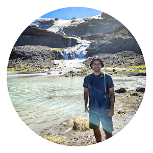

|  |
Giancarlo Espinaza Gallardo Solution Architect at
Ericsson Chile S.A
|
| 2020 - Present | Solution Architect - Ericsson |
| 2016 - 2021 | Integration Engineer - Ericsson |
| 2013 - 2015 | Consultant - Novadvice |
| 2010 | Intern at Canal 13 |
| BSS | ⭐⭐⭐⭐⭐ |
| WEB Development | ⭐⭐ |
| Cloud Architectures | ⭐⭐⭐ |